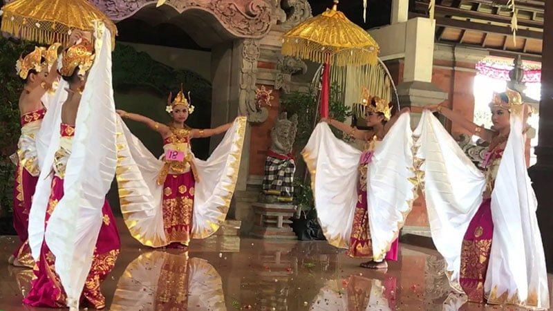

Tari Nelayan
Tari Nelayan, Bali. Keragaman seni dan budaya adalah salah satu alasan yang membuat Bali tetap indah. Dalam hal ini, tari menjadi penggal seni yang turut mengiringi kesejarahan budaya masyarakat di pulau yang berjuluk Pulau Dewata ini.
Selain tarian yang bersifat sakral (Tari Wali) yang terkait erat dengan religiusitas masyarakat Bali. Banyak juga tercipta seni tari sekuler (balih-balihan) yang difungsikan murni untuk hiburan. Tersebutlah satu di antaranya, yakni Tari Nelayan karya dari I Ketut Merdana.
Tari ini diciptakan I Ketut Merdana di desa Kedisan, Buleleng pada tahun 1960. Sesuai namanya, gerakan yang dihadirkan diadopsi dari gerakan-gerakan nelayan Bali dalam menjalankan aktivitas menangkap ikan.
Tarian Nelayan setidaknya melibatkan satu penari laki-laki dan dua penari perempuan. Mereka menari membawakan gerakan seperti mendayung, menebar jala dan lain sebagainya. Semua gerakan yang tersaji lebih menggambarkan kerjasama nelayan dalam mencari ikan.
Dalam hal tata busana, penari laki-laki menggunakan udeng atau ikat kepala, rumbing, badong, sabuk lilit, apok-apok, kamen atau jarik dan celana. Dipakai juga gelang kane dan klat bahu.
Sementara itu, untuk busana penari perempuannya menggunakan lelunaan sebagai ciri khas wanita Bali di jaman dulu. Selain itu, mereka juga mengenakan angkin, sabuk lilit, serta jarik dengan riasan cantik.
Pementasan Tarian Nelayan ini biasanya diiringi oleh Gong Kebyar. Salah satu dari ensambel Gamelan Bali yang juga terlahir di Kabupaten Buleleng pada kisaran tahun 1914-1915.
Oleh karena itu, tarian ini bisa dikategorikan sebagai tari-tarian kekebyaran. Sebagai hiburan, tari ini juga pernah ditarikan secara massal dengan melibatkan 900 penari di pembukaan acara Festival Buleleng 2014.
Kehidupan masyarakat pesisir di Indonesia banyak menginspirasi lahirnya seni tradisi. Selain Tari Nelayan di Bali ini, di Aceh juga ada tarian yang terinspirasi dari tradisi menangkap ikan nelayan Aceh, yakni Tari Tarek Pukat.
<< Kembali